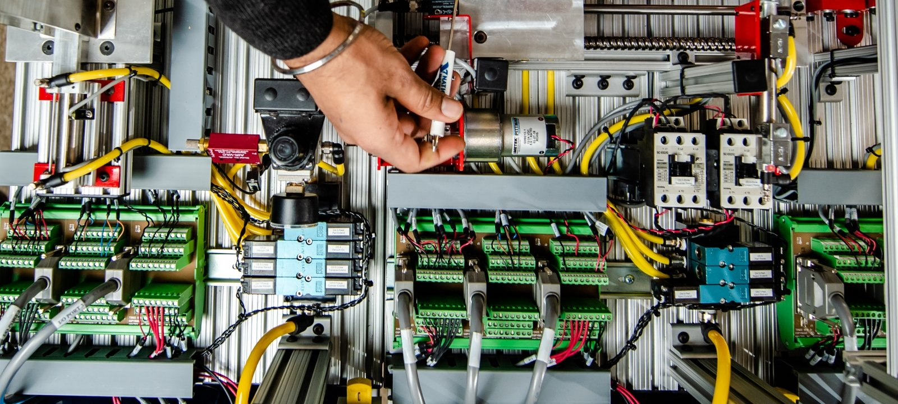

Apa Itu ROBOTIIK?
ROBOTIIK adalah sebuah komunitas bagi para mahasiswa Fakultas Ilmu Komputer, Universitas Brawijaya untuk mengembangkan
bakat dan minatnya dalam pengembangan dan riset mengenai dunia robotika. ROBOTIIK sendiri merupakan bagian dari laboratorium Sistem Komputer dan Robotika Fakultas Ilmu Komputer, Universitas Brawijaya yang didedikasikan untuk pengembangan kreatifitas di bidang robotika, penelitian, lomba dan mengenalkan robotika kepada masyarakat dengan mengembangkan ilmu pengetahuan dan teknologi.
Divisi
Terdapat 3 divisi dalam komunitas ROBOTIIK Fakultas Ilmu Komputer Universitas Brawijaya
Programming
Dalam pengembangan sebuah robot tentunya tidak lepas dari memprogram robot itu sendiri. Disinalah peran divisi programming, yaitu berfokus dalam bidang pemrograman baik itu dari segi pergerakan dan penglihatan robot itu sendiri agar robot dapat berfungsi dengan baik.
Divisi programming dibagi menjadi 2
Programming Motion

Programming motion adalah pemrograman yang memberi instruksi untuk menyelesaikan beberapa tugas gerak dari sebuah robot. Tugasnya bisa sesederhana mengendalikan aktuator yang biasa berupa servo agar dapat bergerak sesuai dengan tujuan hingga mengatur keseimbangan robot agar dapat bergerak dengan baik.
Programming Vision
Programming vision lebih berfokkus pada bagian visual dari robot atau dengan kata lain bagian penglihatan sebuah robot. Hal ini sangatlah penting karena robot diharapkan mampu untuk mengenali sebuah objek dan menentukan tindakan apa yang perlu dilakukan oleh robot tersebut sesuai dengan tujuan dibuatnya sebuah robot.
Mechanical

Mechanical merupakan divisi yang bertanggung jawab untuk semua keperluan komponen dan suku cadang yang diperlukan sebuah robot. Dengan kata lain, divisi mechanical dituntut untuk mampu mendesain dan merancang komponen yang dibutuhkan sebuah robot serta merakitnya menjadi sebuah robot utuh. Selain itu, divisi mechanical juga perlu untuk selalu memperhatikan kondisi robot dan melakukan pemeliharaan terhadapnya.
Electrical

Electrical merupakan divisi yang bertanggung jawab untuk seluruh bagian yang berhubungan dengan bidang kelistrikan dan komponen elektronik yang ada pada sebuah robot. Dengan demikian, electrical bertugas untuk merancang Printed Circuit Board (PCB) yang digunakan untuk mengkoneksikan perangkat elektronika pada sebuah robot.
Project
ROBOTIIK Fakultas Ilmu Komputer Universitas Brawijaya memiliki fokus kepada 3 project besa
Humanoid
Robot humanoid merupakan tipe robot yang memiliki bentuk dan perilaku yang menyerupai manusia. ROBOTIIK sendiri mengembangkan robot humanoid untuk mengikuti beberapa perlombaan, salah satunya adalah cabang lomba dari Kontes Robot Indonesia (KRI), yaitu lomba Kontes Robot Sepak Bola Indonesia (KRSBI). Ini merupakan lomba yang mengusung penggunaan robot humanoid untuk dapat menendang bola dan memasukannya ke gawang lawan. Tentunya dengan robot yang sudah harus diprogram secara otomatis.
Submarine
Salah satu robot yang dikembangkan ROBOTIIK adalah robot submarine, ini merupakan salah satu jenis robot yang mampu beroperasi di dalam air selayaknya kapal selam sungguhan. Tim ROBOTIIK juga mengikuti lomba untuk jenis robot ini, salah satunya dalam lomba Kontes Kapal Cepat Tak Berawak (KKCTBN).
Quadcopter
Quadcopter adalah jenis robot terbang yang termasuk ke dalam kategori Unmanned Aerial Vehicle (UAV) yang memiliki ciri khusus yang mudah dikenali yaitu memiliki empat buah baling-baling motor yang digunakan sebagai penggeraknya. Quadcopter juga akan diikutkan dalam perlombaan, salah satunya adalah Kontes Robot Terbang Indonesia.